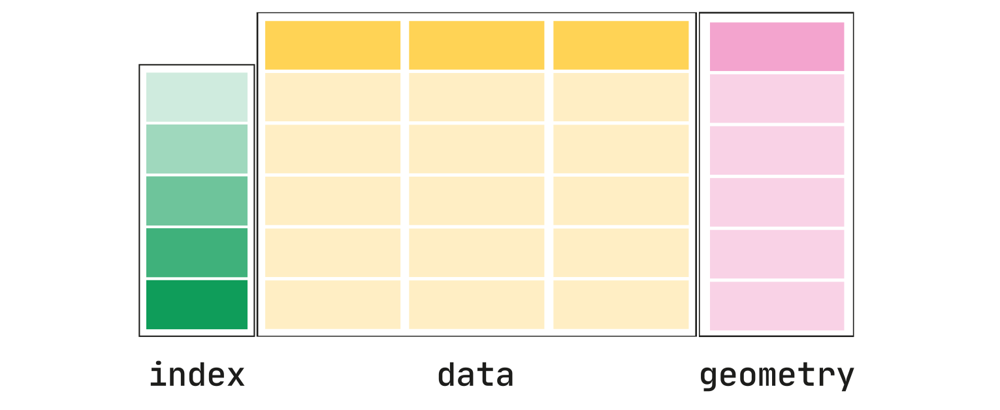
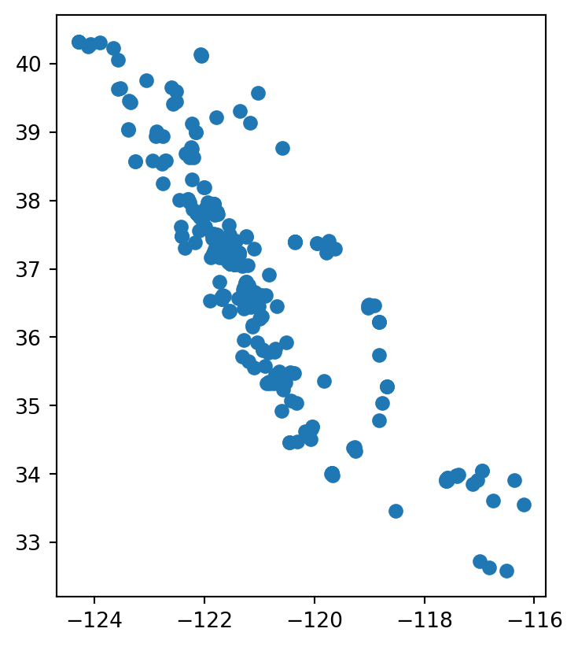
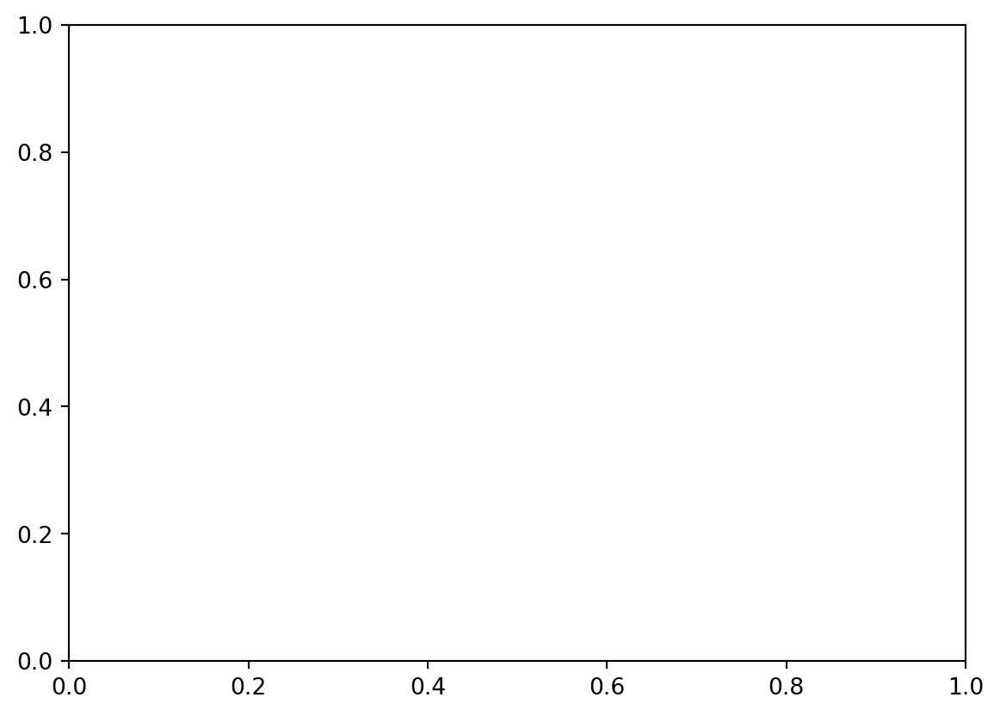
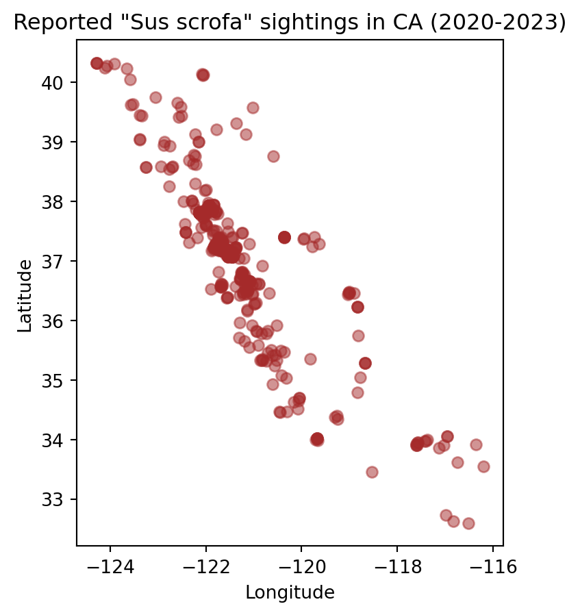

# this is the library we will explore
import geopandas as gpd
# we will start using matplotlib for making maps
import matplotlib.pyplot as plt11 geopandas
GeoPandas is a Python library that extends the pandas library by adding support for geospatial data. In this lesson we will introduce the geopandas library to work with vector data. We will also make our first map.
To begin with, let’s import geopandas with its standard abbreviation gpd:
11.1 Data
In this lesson we will use simplified point data about wild pigs (Sus scrofa) sightings in California, USA from the Global Biodiversity Information Facility.
We can read in a shapefile with geopandas by using the gpd.read_file() function.
pigs = gpd.read_file('data/gbif_sus_scroga_california/gbif_sus_scroga_california.shp')
pigs.head()| gbifID | species | state | individual | day | month | year | inst | collection | catalogNum | identified | geometry | |
|---|---|---|---|---|---|---|---|---|---|---|---|---|
| 0 | 899953814 | Sus scrofa | California | NaN | 22.0 | 3.0 | 2014.0 | iNaturalist | Observations | 581956 | edwardrooks | POINT (-121.53812 37.08846) |
| 1 | 899951348 | Sus scrofa | California | NaN | 9.0 | 6.0 | 2007.0 | iNaturalist | Observations | 576047 | Bruce Freeman | POINT (-120.54942 35.47354) |
| 2 | 896560733 | Sus scrofa | California | NaN | 20.0 | 12.0 | 1937.0 | MVZ | Hild | MVZ:Hild:195 | Museum of Vertebrate Zoology, University of Ca... | POINT (-122.27063 37.87610) |
| 3 | 896559958 | Sus scrofa | California | NaN | 1.0 | 4.0 | 1969.0 | MVZ | Hild | MVZ:Hild:1213 | Museum of Vertebrate Zoology, University of Ca... | POINT (-121.82297 38.44543) |
| 4 | 896559722 | Sus scrofa | California | NaN | 1.0 | 1.0 | 1961.0 | MVZ | Hild | MVZ:Hild:1004 | Museum of Vertebrate Zoology, University of Ca... | POINT (-121.74559 38.54882) |
One shapefile = multiple files
Although the parameter for gpd.read_file() is only the .shp file, remember that we need to have at least the .shx and .dbf files in the same directory as the .shp to read in the data.
11.2 GeoSeries and GeoDataFrame
The core data structure in GeoPandas is the geopandas.GeoDataFrame. We can think of it as a pandas.DataFrame with a dedicated geometry column that can perform spatial operations.
The geometry column in a gpd.GeoDataFrame holds the geometry (point, polygon, etc) of each spatial feature. Columns in the gpd.GeoDataFrame with attributes about the features are pandas.Series like in a regular pd.DataFrame.

Example
First of all, notice that the leftmost column of pigs is a column named geometry whose values indicate points.
pigs.head(3)| gbifID | species | state | individual | day | month | year | inst | collection | catalogNum | identified | geometry | |
|---|---|---|---|---|---|---|---|---|---|---|---|---|
| 0 | 899953814 | Sus scrofa | California | NaN | 22.0 | 3.0 | 2014.0 | iNaturalist | Observations | 581956 | edwardrooks | POINT (-121.53812 37.08846) |
| 1 | 899951348 | Sus scrofa | California | NaN | 9.0 | 6.0 | 2007.0 | iNaturalist | Observations | 576047 | Bruce Freeman | POINT (-120.54942 35.47354) |
| 2 | 896560733 | Sus scrofa | California | NaN | 20.0 | 12.0 | 1937.0 | MVZ | Hild | MVZ:Hild:195 | Museum of Vertebrate Zoology, University of Ca... | POINT (-122.27063 37.87610) |
As usual, we can check the type of our objects using the type Python function:
# type of the pigs dataframe
print(type(pigs))
# type of the geometry column
print(type(pigs.geometry))
# type of the gbifID column
print(type(pigs.gbifID))<class 'geopandas.geodataframe.GeoDataFrame'>
<class 'geopandas.geoseries.GeoSeries'>
<class 'pandas.core.series.Series'>The new data type of the geometry column is also reflected when we look at the data types of the columns in the data frame:
pigs.dtypesgbifID int64
species object
state object
individual float64
day float64
month float64
year float64
inst object
collection object
catalogNum object
identified object
geometry geometry
dtype: objectWe can also check the type of each element in the geometry column using the geom_type attribute of a gpd.GeoDataFrame:
pigs.geom_type0 Point
1 Point
2 Point
3 Point
4 Point
...
1041 Point
1042 Point
1043 Point
1044 Point
1045 Point
Length: 1046, dtype: object11.3 Geometric information
Two other important attributes of a gpd.GeoDataFrame are its coordinate reference system (CRS) and its extent.
We can think of the coordinate reference system (CRS) as the instructions to locate each feature in our dataframe on the surface of the Earth. We access the CRS of a gpd.GeoDataFrame using the crs attribute:
# access the CRS of the GeoDataFrame
pigs.crs<Geographic 2D CRS: EPSG:4326>
Name: WGS 84
Axis Info [ellipsoidal]:
- Lat[north]: Geodetic latitude (degree)
- Lon[east]: Geodetic longitude (degree)
Area of Use:
- name: World.
- bounds: (-180.0, -90.0, 180.0, 90.0)
Datum: World Geodetic System 1984 ensemble
- Ellipsoid: WGS 84
- Prime Meridian: GreenwichThe extent of the geo-dataframe is the bounding box covering all the features in our geo-dataframe. This is formed by finding the points that are furthest west, east, south and north.

We access the extent of a gpd.GeoDataFrame using the total_bounds attribute:
pigs.total_boundsarray([-124.29448 , 32.593433, -115.4356 , 40.934296])11.4 Data wrangling
GeoPandas is conveniently built on top of pandas, so we may use everything we have learned about data selection, wrangling, and modification for a pd.DataFrame.
Example
Suppose we only want to use recent data for wild pig observations. A quick check shows that this dataframe has data since 1818:
# use sort_index() method to order the index
pigs.year.value_counts().sort_index()1818.0 31
1910.0 1
1925.0 1
1927.0 4
1929.0 3
...
2019.0 101
2020.0 159
2021.0 164
2022.0 185
2023.0 98
Name: year, Length: 61, dtype: int64We can use our usual data selection to get data from 2020 onwards:
# selet data from 2020 onwards
pigs_recent = pigs[pigs.year>=2020]
# print length of original dataframe
print(len(pigs))
# check length of new dataframe
len(pigs_recent)104660611.5 Plotting
11.5.1 plot()
Similarly to a pd.DataFrame, a gpd.GeoDataFrame has a plot() method that we can call directly to create a quick view of our data. The geospatial information of the gpd.GeoDataFrame will be used to create the axes of the plot.
Example
This is a quick look at our recent pigs data:
pigs_recent.plot()<AxesSubplot:>
11.5.2 matplotlib’s fig and ax
Going forward, we will often want to make more complex visualizations where we add different layers to a graph and customize it. To do this we will use the matplotlib Python library for creating visualizations. We can interact with matplotlib via its pyplot interface, which we imported at the top of the notebook as
# import matplotlib with standard abbreviation
import matplotlib.pyplot as pltMatplotlib graphs the data in a figure which can have one or more axes. The axis is only the area specified by the x-y axis and what is plotted in it. To create a new blank figure:
- Initialize a new figure and axes by calling
pyplot’ssubplots()function, and - show the graph using
plt.show():
# create a blank figure (fig) with an empty axis (ax)
fig, ax = plt.subplots()
# display figure
plt.show()
Notice we get a figure with a single empty axis. We can think of this step as setting a new blank canvas on which we will paint upon.
Functions with multiple return values
Notice that plt.subplots() is a function that returns two objects (has two outputs).
11.5.3 Adding a layer
When using matplotlib, it can be useful to think of creating a plot as adding layers to an axis. The general syntax to plot a datafram df onto an axis is:
# create new figure and axis
fig, ax = plt.subplots()
# plot df on the ax axis
df.plot(ax=ax,
...) # other arguments for plot function
# display figure
plt.show()Example
The first layer we want to add to our axis is the pigs_recent point data. We can plot our data using matplotlib like this:
# create new figure and axis
fig, ax = plt.subplots()
# add pigs point plot to our figure's axis
pigs_recent.plot(ax=ax)
# display figure
plt.show<function matplotlib.pyplot.show(close=None, block=None)>
11.5.4 Customization
Matplotlib allows for a lot of customization. Some of it can be done directly in the plot() method for the dataframe (like we’ve done when ploting data using pandas), while other is done by updating attributes of the axis ax. The following image shows some examples of elements in the axis that can be updated.

Example
Some basic customization for our pigs data could looke like this:
# initialize empty figure
fig, ax = plt.subplots()
# add data to axis
# notice customization happens as arguments in plot()
pigs_recent.plot(ax=ax,
alpha=0.5,
color='brown'
)
# update axis
# customization separate from the data plotting
ax.set_title('Reported "Sus scrofa" sightings in CA (2020-2023)')
ax.set_xlabel('Longitude')
ax.set_ylabel('Latitude')
# display figure
plt.show()
11.6 References
GBIG data: GBIF.org (23 October 2023) GBIF Occurrence Download https://doi.org/10.15468/dl.qavhwp
Geopandas Documentation - Introduction to GeoPandas
Matplotlib Documentation - Basic Usage
<!– https://www.neonscience.org/resources/learning-hub/tutorials/intro-vector-data-r